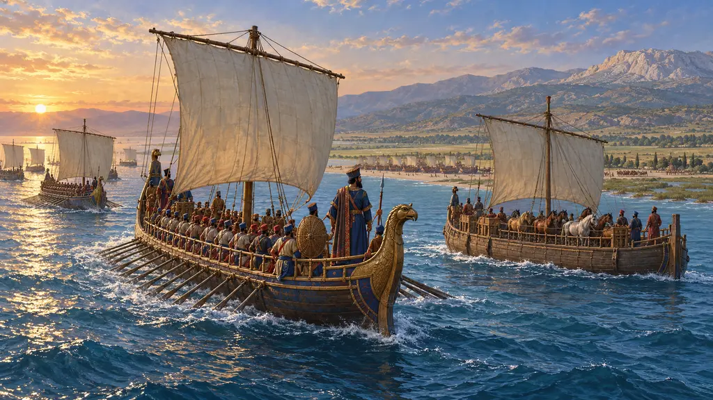
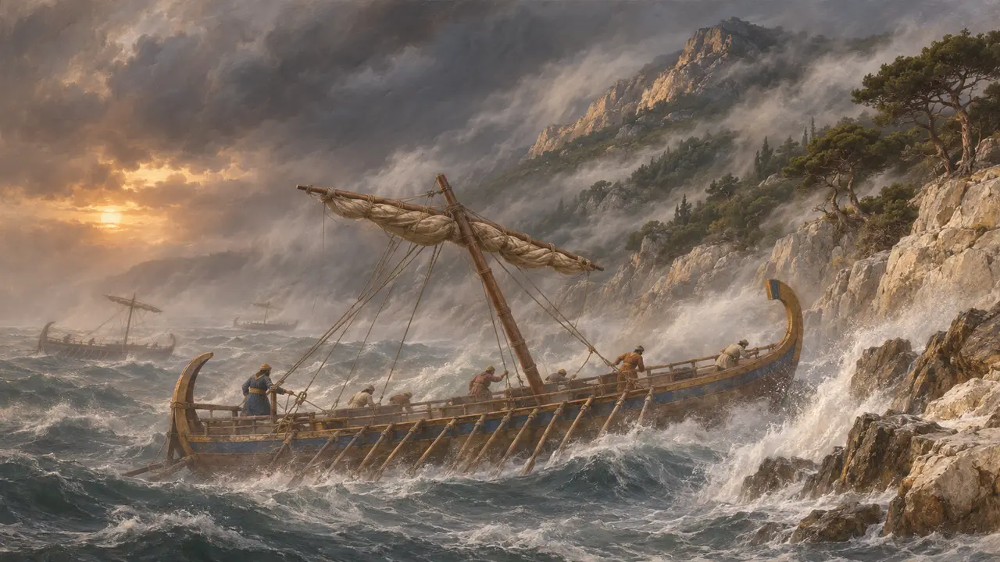
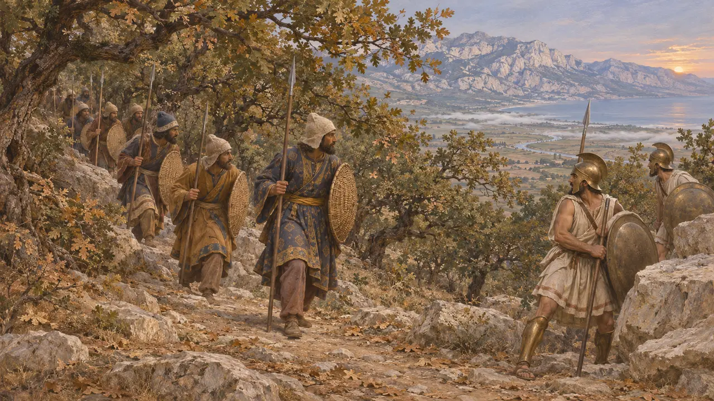
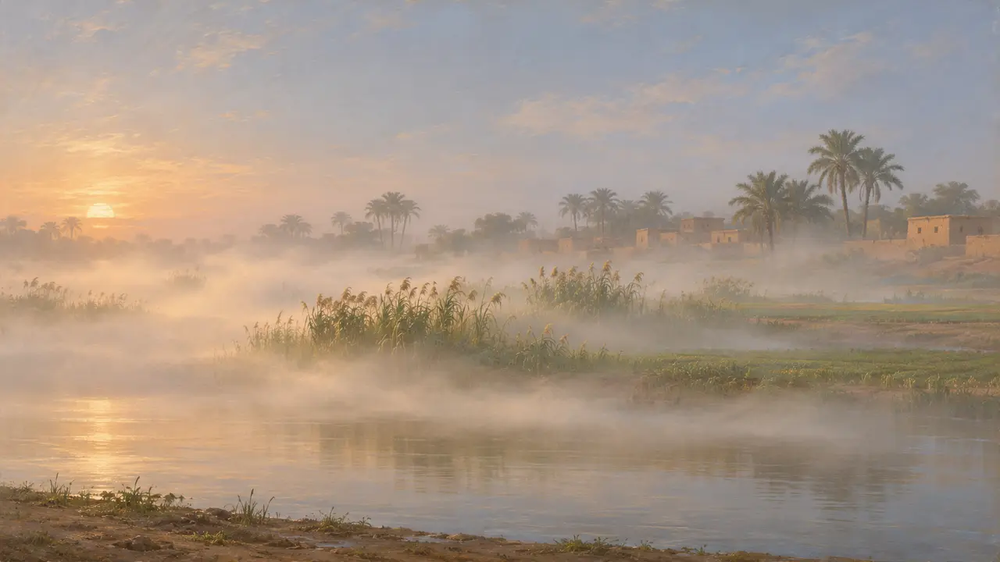

Encyclopédie › Faune et climat

Brume matinale
Décor des plaines fluviales et des côtes dans le jeu ; pas un événement attesté de 559-479 av. J.-C.
Dans le jeu : Niveau 2 : Le Porte-lance, Niveau 5 : La Charte, Niveau 6 : Le Pont de bateaux, Niveau 7 : Sardes brûle, Niveau 8 : La Baie de Marathon, Niveau 9 : Le Canal, Niveau 10 : Les Portes chaudes, Niveau 11 : Le Dénouement
La brume matinale est fréquente sur les plaines fluviales et les côtes pendant les mois frais, et elle convient aux lieux où se déroulent les campagnes du jeu. Les auteurs antiques qui décrivent ces campagnes n'en disent que peu de chose, voire rien. La brume du jeu relève de l'atmosphère, non d'un événement documenté.
Dans le jeu : Le jeu étend une brume matinale sur les plaines fluviales et les côtes de ses niveaux, d'avant l'aube jusqu'à ce qu'elle se dissipe, le plus souvent en automne et au printemps, et en hiver à Memphis. Elle n'est qu'un décor et n'a aucun effet sur le jeu.

Ce que rapportent les auteurs anciens
Récit antiqueHérodote prête attention au temps qu'il fait lorsqu'il change le cours des événements. Il décrit le vent du nord qui détruisit la flotte de Mardonios au large de l'Athos et la tempête qui frappa les navires perses au large de la Magnésie. Dans ses récits de Marathon, des Thermopyles et de Platées, il ne mentionne pas la brume, et je ne connais aucun autre récit antique qui le fasse.
Herodotus 6.44; Herodotus 7.188-192

L'aube et la visibilité aux Thermopyles
Récit antiqueHérodote dit que les troupes d'Hydarnès gravirent de nuit le sentier de l'Anopée et atteignirent le sommet à l'aube. Il mentionne le bruissement des feuilles de chêne qui alerta les gardes phocidiens, et ne dit rien d'une mauvaise visibilité. Cela suggère qu'il notait l'état du sol et des arbres quand il importait à son récit, mais le silence ne prouve rien.
Herodotus 7.217-218

D'où vient la brume du jeu
ContestéDe nos jours, la brume et le brouillard se forment sur les vallées fluviales et les côtes pendant les mois frais, y compris dans la vallée du Nil en hiver. Le climat antique ne peut être reconstitué qu'avec prudence, et aucun texte ne donne le temps qu'il faisait un matin précis de ces campagnes. Le schéma du jeu, avec une brume d'automne et de printemps, et une brume d'hiver à Memphis, est donc un cadre plausible plutôt qu'un fait attesté.
Herodotus 7.217-218
Sources
- Herodotus 6.44
- Herodotus 7.188-192
- Herodotus 7.217-218